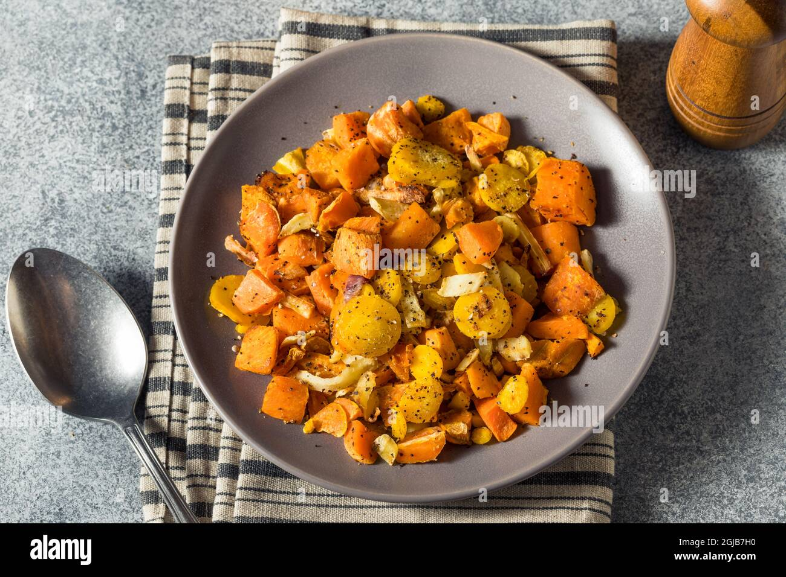

Honey Glazed Root Vegetables...

Description
Vegetables. You can eat them I guess....
Ingredients
- 4 cups mixed vegetables
- 2 tbsp butter
- 1/4 Cup Honey
- Salt and black pepper
- 1 tsp dried thyme
Steps
- In a large skillet, melt the butter over medium heat. Add the chopped root vegetables and cook, stirring occasionally, until they begin to soften and turn golden brown, about 10-15 minutes.
- Drizzle the honey over the vegetables, and season with salt, black pepper, and thyme. Continue to cook, stirring occasionally, for an additional 10-15 minutes, or until the vegetables are tender and caramelized.
- Serve hot as a side dish or mixed into a hearty Viking stew.
Credit
This here recipe was ploundered from this website.
Back to index.